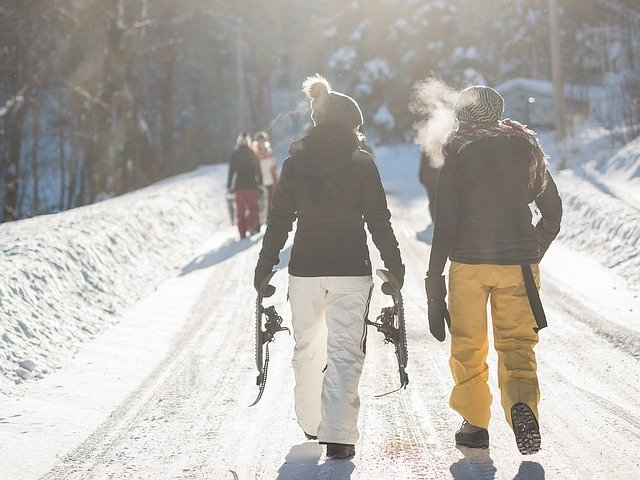
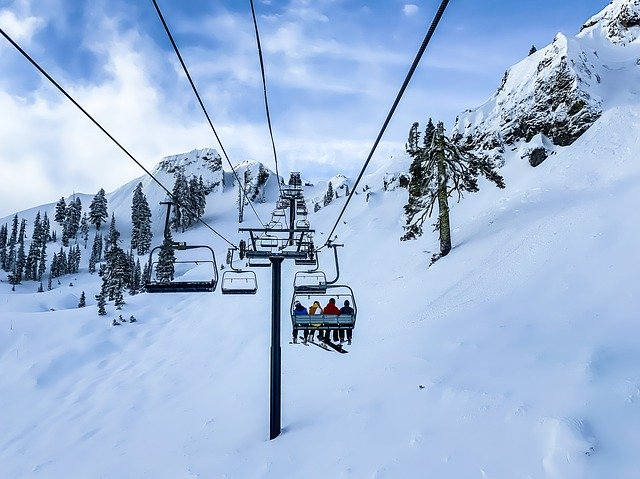
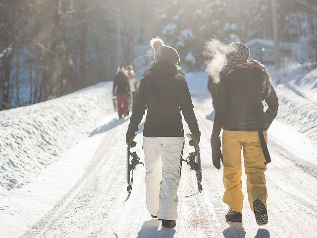
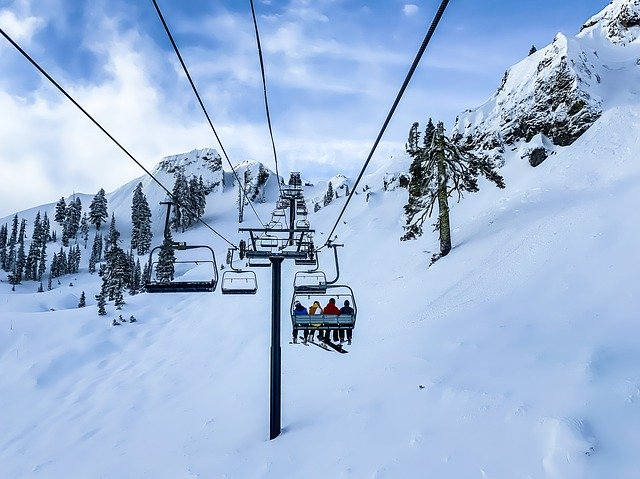
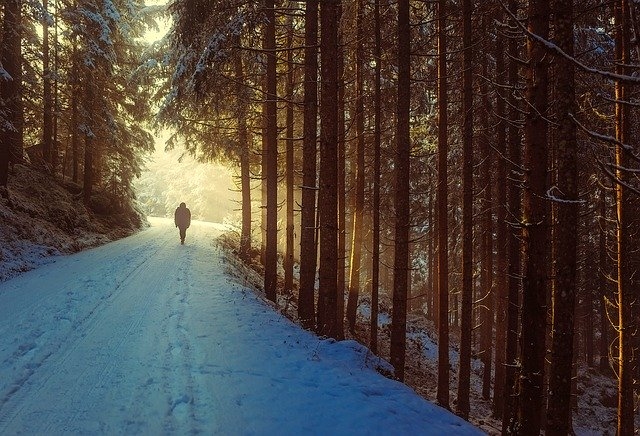
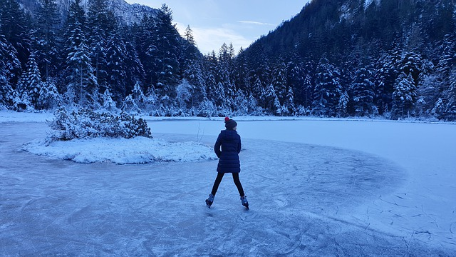
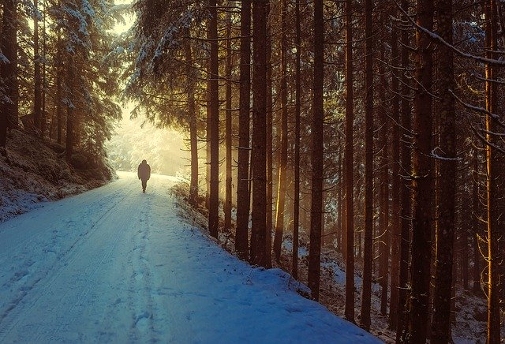
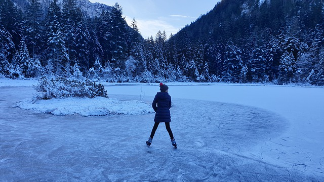

Centre plein aire de la montagne
Activités saisonnières
Que vous soyez fan de ski alpin, ski de fond, raquette, patin à glace ou glissade sur tube, nous avons de quoi plaire à tout le monde! Descendez nos majestueuses pistes de ski, promenez vous dans nos magnifiques sentiers ou patinez sur nos chemins de glace en forêt. Le Centre de plein air de la montagne vous permettra de profiter pleinement de nos belles journées hivernales en famille.
Glissade sur luge
Amateur de vitesse et de sensations fortes, venez courser sur notre tout nouveau circuit de luge en montagne! Plus de 8 kilomètre de descente en luge où vous pouvez courser avec vos amis ou encore simplement profiter du paysage. Une toute nouvelle expérience qui vous en mettera plein la vu!

 




 


